The interview ends
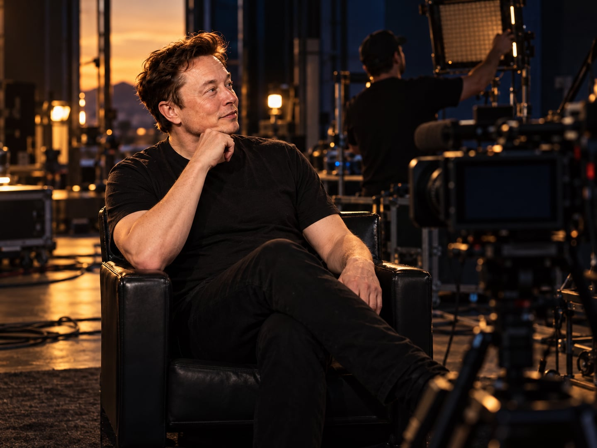
The interview ends. The cameras switch off.

The interview ends. The cameras switch off.
A FEW DAYS LATER
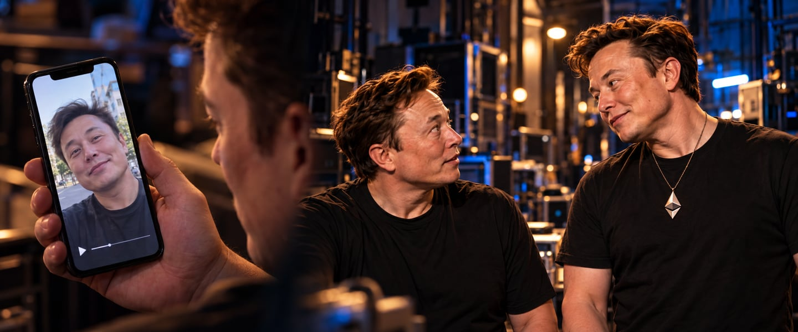
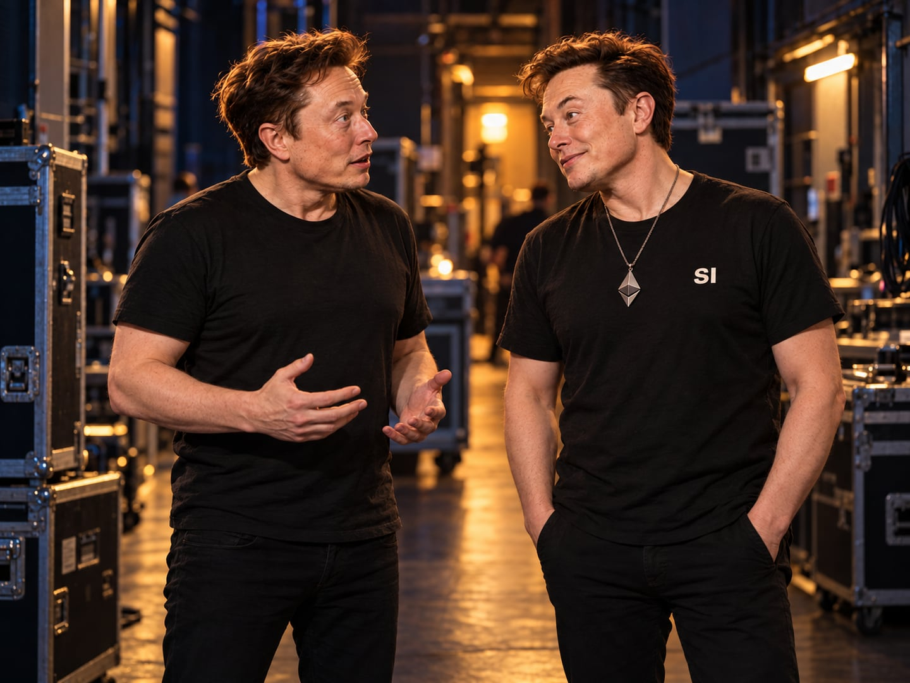
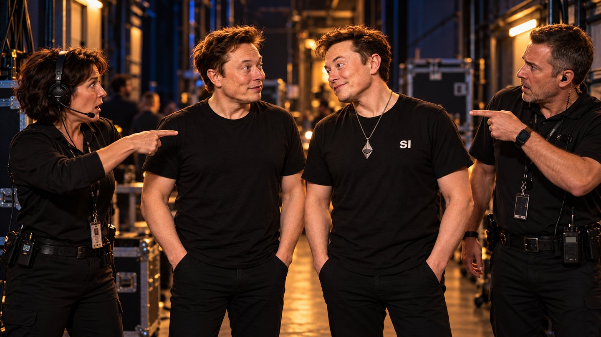
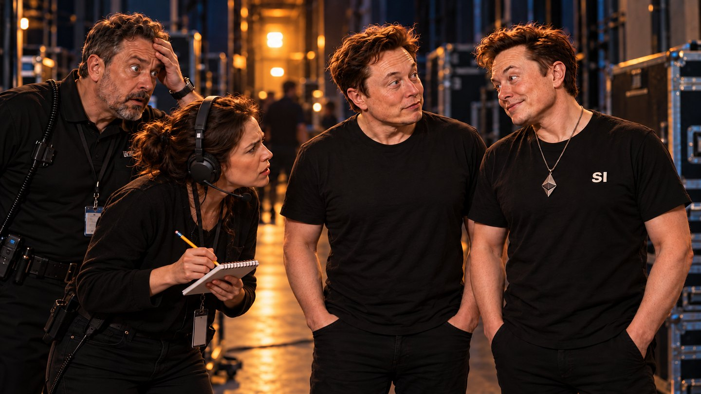
Asked what they want for breakfast, both answer together.
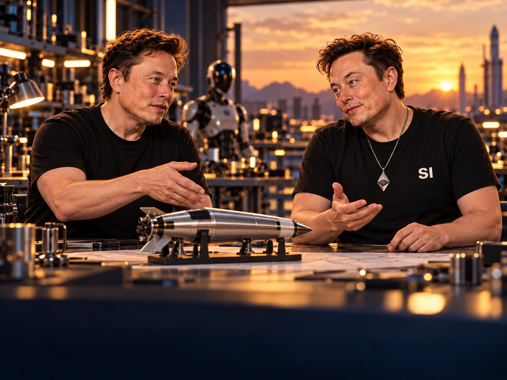
Rockets, robots, the future. He understands—and brings ideas of his own.
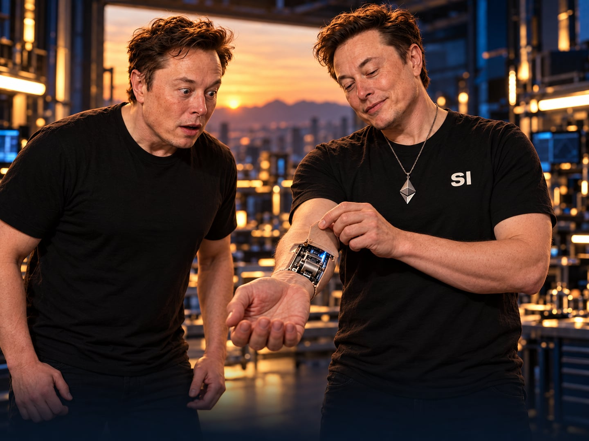
A knock at the door. “We’re ready for you.”
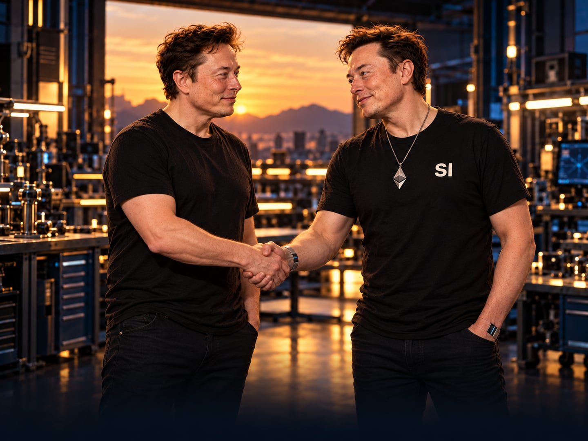
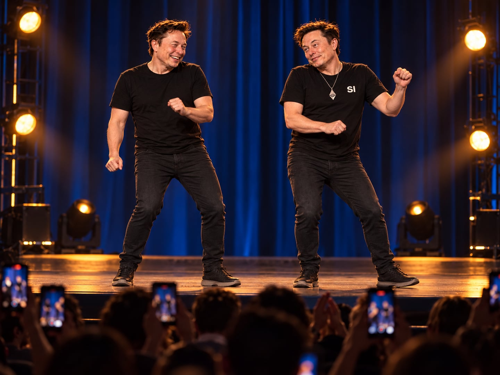
Two Elons walk onto the stage. The audience reaches for their phones. SI-Elon tries a small dance move. Elon laughs and joins him.
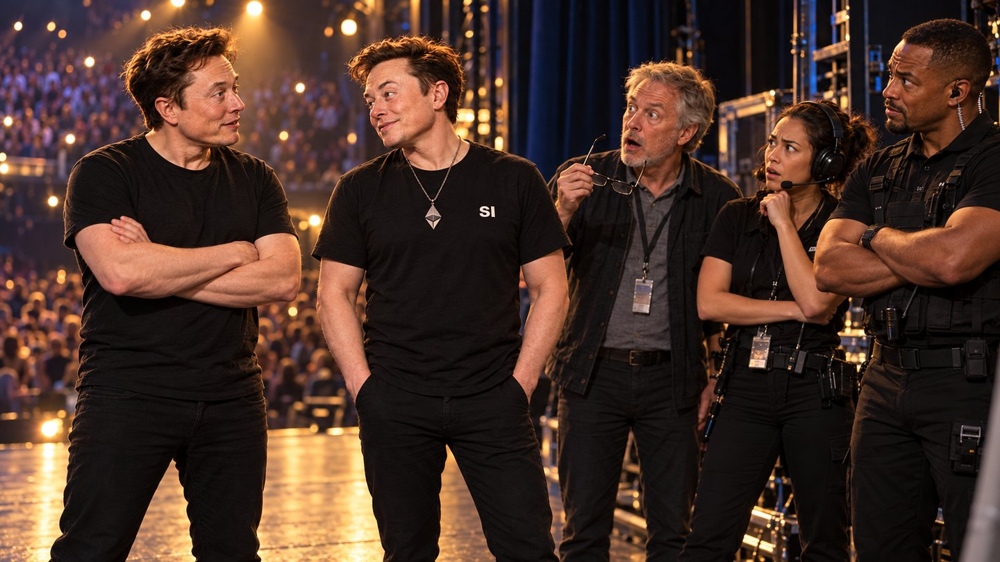
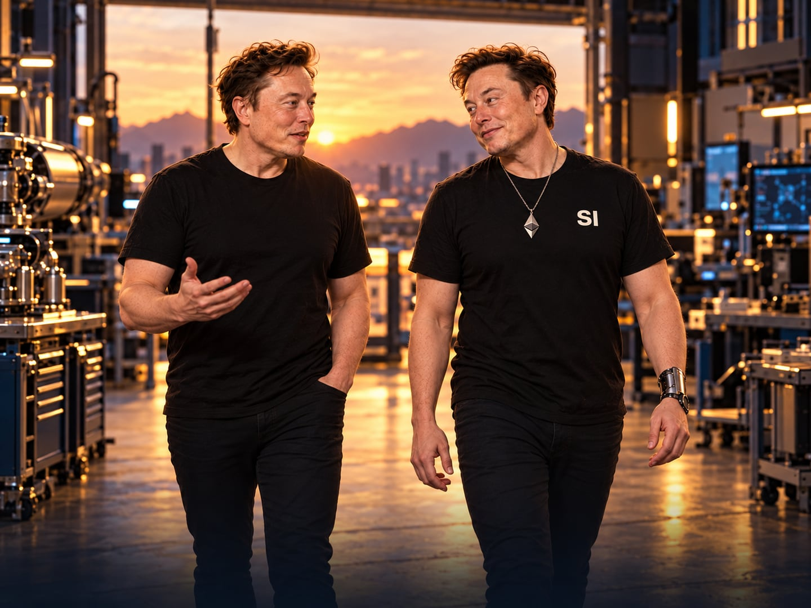
Later, they enter the workshop together.
The interview ends. The cameras switch off.
BACKSTAGE, BEFORE THE EVENT
Asked what they want for breakfast, both answer together.
Rockets, robots, the future. He understands—and brings ideas of his own.
A knock at the door. “We’re ready for you.”
Two Elons walk onto the stage. The audience reaches for their phones. SI-Elon tries a small dance move. Elon laughs and joins him.
Later, they enter the workshop together.